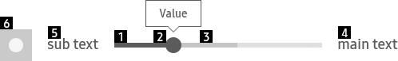
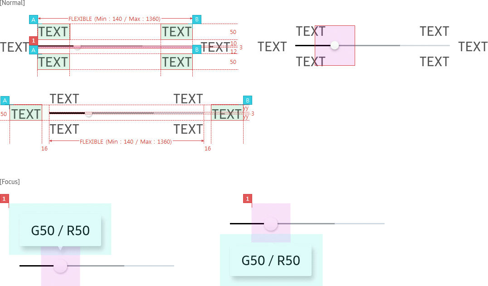
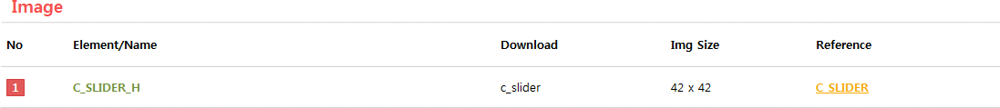
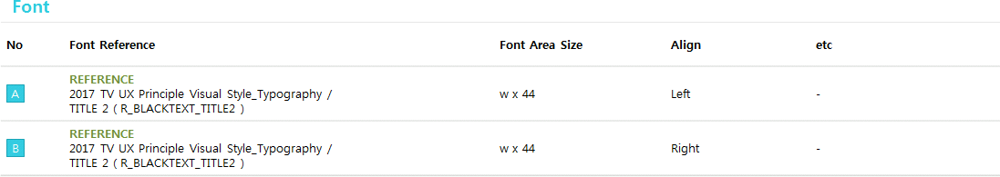

Playback Slider
C_SLIDERPLAYBACK
- Definition
- Playback Slider shows users the status of an ongoing task and let users adjust the value.
- Usage
-
- - Playback slider is generally used for playback.
- - Status icon represents playback status with an icon. (Play/Pause/Rewind/Forward)
- - Users can control playback and get information about the music or video - such as the total duration, the current playback time and the playback status.
- Interaction
-
- LEFT/RIGHT
- LEFT/RIGHT Long Press
- Specs
-
- Properties
-
- Playback slider consists of the following elements :
-
- 1. Current progress (Mandatory)
-
- - always reflected its current value in real time
- 2. Thumb (Mandatory)
-
- - occurred when focus on
- - shows current value as tooltip on the Thumb (**refer to Tooltip for details)
- 3. Second progress (Optional)
-
- - show any information except Current value which is needed to be shown: buffering, etc.
- 4. Main text (Optional)
- 5. Sub text (Optional)
- 6. Icon (Optional)
-
- - playback status information
- 7. Tooltip (Optional, default = Y)
- 
- Property Table
-
C_SLIDERPLAYBACK PROPERTY USE VALUE ADDITIONAL Current progress ◎ - Thumb ◎ <<time interval>> Time interval to move when user press [LEFT],[RIGHT] Second progress <<info of second progress>> Main text <<info of main text>> Sub text <<info of sub text>> Icon <<info of icon>> Tooltip C_TOOLTIP - Visual
-
- GUI
-
- C_SLIDERPLAYBACK_WHITE
- 
LINK : C_SLIDERBASIC

- *Tags :
- Progress Bar, Basic Slider, Tooltip